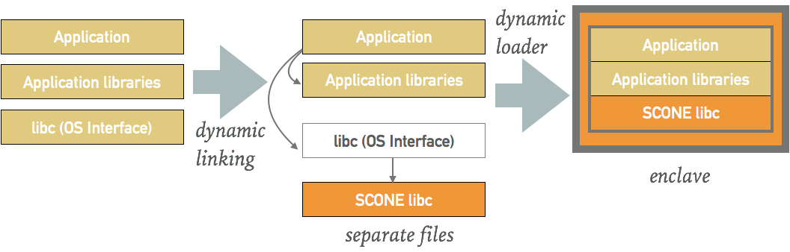
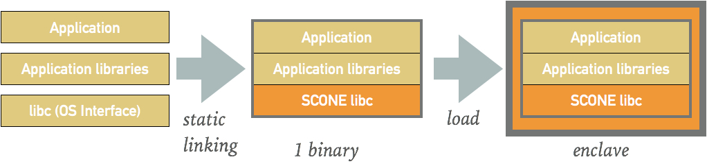

SCONE SGX Toolchain¶
SCONE comes with compiler support for popular languages: C, C++, GO, Rust as well as Fortran. The objective of these (cross-)compilers are to compile applications - generally without source code changes - such that they can run inside of SGX enclaves.
To simplify the use of these (cross-)compilers, SCONE maintains curated container image that includes these cross-compilers.
Compiler variants¶
Depending on if you want to generate a dynamically-linked or a statically-linked binary, you can use a standard compiler (dynamic) or you need to use a cross compiler (static). The compiler can run on any system, i.e., does not require SGX to run.
Portability of SCONE programs
Independently, if you use a dynamic or static linking, the hash of an enclave (MRENCLAVE) will encompass the whole code base, i.e., it includes all libraries. Any updates of a library on your host might prevent the execution of a SCONE binary because of a wrong MRENCLAVE. Hence, we recommend to use only statically-linked programs on the host. In containers, which have a more controlled environment, we recommend both statically as well as dynamically linked binaries. The main advantage of dynamic linking is that for many programs one does not change the build process when moving to SCONE.
Loading Shared Libraries after startup
SCONE supports the loading of dynamic libraries after a program has already started inside of an enclave. This feature is required by modern languages like Java and Python. Enabling general loading of dynamic library introduces the risk that one could load malicious code inside of an enclave. Hence, we switch this feature off by default. For debugging programs, you can enable this feature via an environment variable (export SCONE_ALLOW_DLOPEN=2). For production enclaves, you will need to protect the integrity of the shared libraries with the help of the SCONE file shield.
Dynamically-Linked Binaries¶
The easiest to get started is to compile your programs such that
-
the generated code is position independent (-fPIC),
-
the thread local storage model is global-dynamic (-ftls-model=global-dynamic),
-
your binary is dynamically linked (i.e., do not use -static), and
-
link against musl as your libc (i.e., not glibc or any other libc).

When a program is started, SCONE uses its own dynamic link loader to replace libc by a SCONE libc. The SCONE dynamic linker will load the program inside a new SGX enclave and SCONE libc will enable programs to run inside the SGX enclaves, e.g., execute system calls and protect them from attacks via shields like the file system shield.
To simplify the compiling of your programs for scone, we make available a docker image sconecuratedimages/muslgcc which includes gcc and g++ support. The options will by default be set as shown above. You need, however, to make sure that your Makefiles will not overwrite these options.
Statically-Linked Binaries¶
For statically linked binaries, we make available a (private) docker image sconecuratedimages/crosscompilers:scone which can produce statically linked binaries. In the statically linked binaries, we replace the interface to the operating system (i.e., libc) by a variant that enables programs to run inside Intel SGX enclaves.

Note that a statically linked binaries might look like a dynamically-linked binary. For example, if you look at a statically-linked program web-srv-go, you will still see dynamic dependencies:
$ ldd web-srv-go
linux-vdso.so.1 => (0x00007ffe423fd000)
libpthread.so.0 => /lib/x86_64-linux-gnu/libpthread.so.0 (0x00007effa344f000)
libc.so.6 => /lib/x86_64-linux-gnu/libc.so.6 (0x00007effa3085000)
/lib64/ld-linux-x86-64.so.2 (0x00007effa366c000)
The reason for that is that the statically linked binary that runs inside of an enclave is wrapped in a dynamically linked loader program. The loader program creates the enclave, moves the program code inside the enclave and starts threads that will enter the enclave. The code that is moved inside the enclave is, however, statically linked.
Using the cross compiler container¶
How to use the compiler:
-
use this as a base image and build your programs inside of a container we a Dockerfile), or
-
map volumes such that the compiler can compile files living outside the container (see SCONE Tutorial).
For an example how to use the crosscompilers, see how to compile a programs written in GO.
Example¶
Note on some systems you will need to run docker with root permissions, i.e., in this case you should prefix a
> docker ...
command with sudo, i.e., you execute
> sudo docker ...
One can run the above compiler inside of a container while the compiled files reside outside the container. Say, your code is in file myapp.c in your current directory ($PWD). You can compile this code as follows:
> docker run --rm -v "$PWD":/usr/src/myapp -w /usr/src/myapp sconecuratedimages/muslgcc gcc myapp.c
This call will generate a binary a.out in your working directory. This binary is dynamically linked against musl:
> ldd a.out
/lib/ld-musl-x86_64.so.1 (0x7fb0379f9000)
libc.musl-x86_64.so.1 => /lib/ld-musl-x86_64.so.1 (0x7fb0379f9000)
This binary can run natively only if you have musl installed at the correct position in your development machine (and your development machine runs Linux). Alternatively, you can run the binary in a container:
> docker run --rm -v "$PWD":/usr/src/myapp -w /usr/src/myapp sconecuratedimages/muslgcc ./a.out
To run this inside of SGX enclaves with SCONE, you need access to the SCONE runtime systems. For more details, see our hello world in Section SCONE Tutorial. This is not very convenient and hence, we provide a) a simpler version with the help of Dockerfiles.
In most cases, you might just set to use one of our crosscompilers in your configure script or Makefile. A simple way is to use the Docker image sconecuratedimages/crosscompilers:scone as a base image and then clone your code inside the container and set one or more of our compilers (scone-gcc, scone-g++, scone-gccgo, scone-gfortran, and scone-rustc) to be used in your build. For Rust, we support also our variant of cargo which is scone-cargo.
Debugger support¶
We also support gdb to debug applications running inside of enclaves. To get started, we recommend that you first ensure that your program runs natively linked against musl. Most programs will do - after all, the Alpine Linux distribution is completely based on musl. The debugger is available in image sconecuratedimages/crosscompilers:scone as scone-gdb.
For example on how to use the debugger, see how to debug a program written in GO.
© scontain.com, November 2017. Questions or Suggestions?